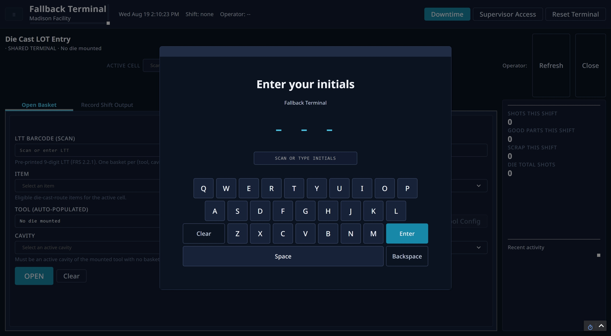
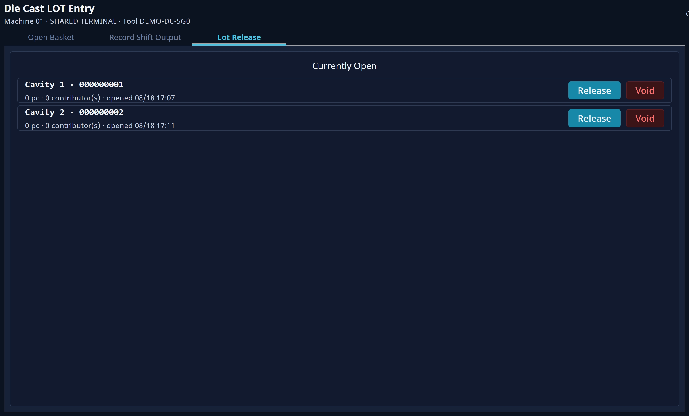
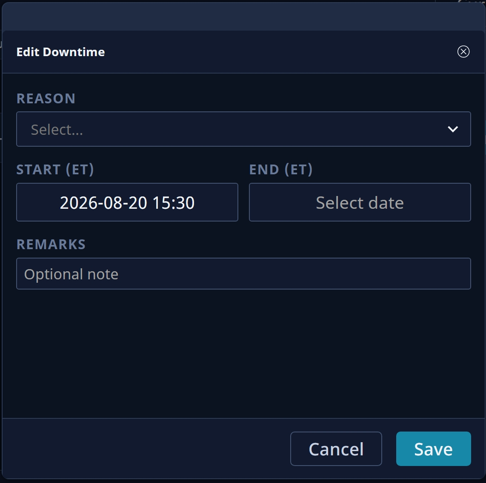
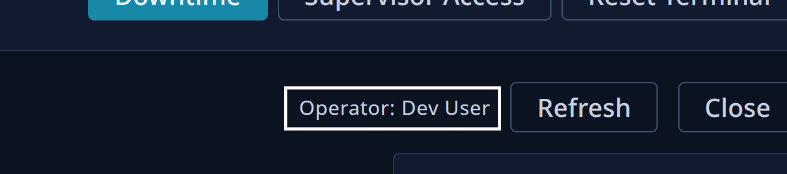
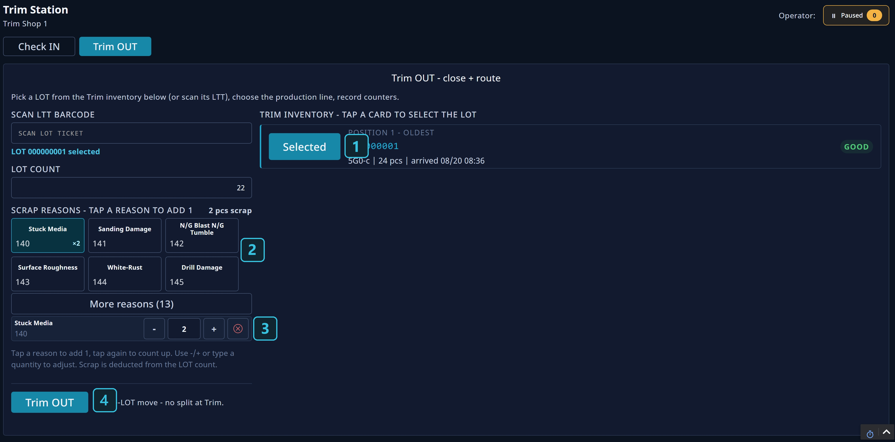
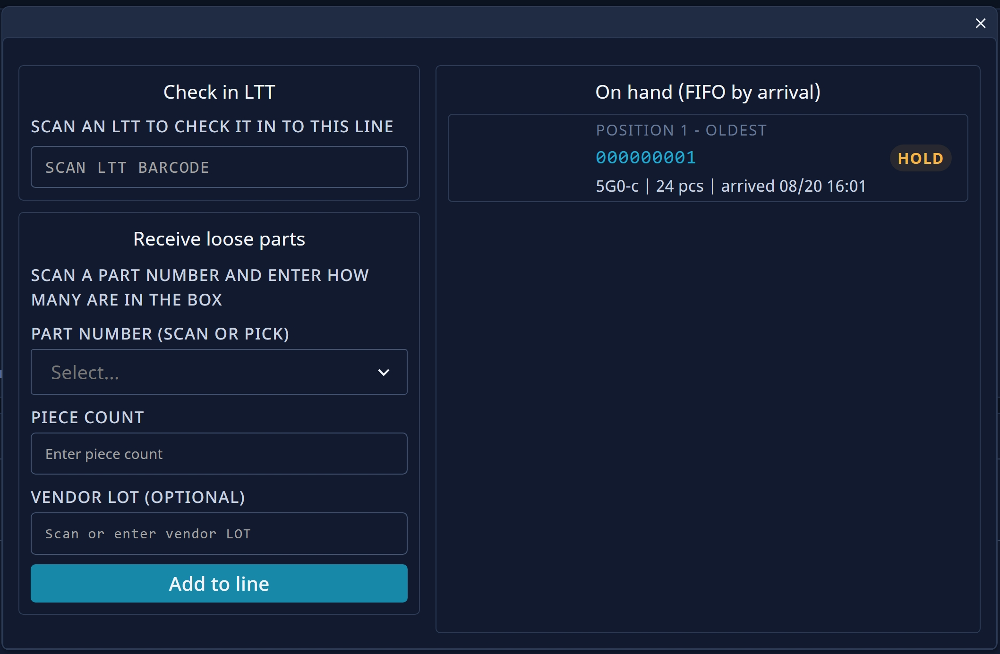

About this Guide
The Shop Floor App is where operators will manage LOT creation and movement at the terminals. Terminals are given a different screen depending on what machine is assigned to it. This guide will go over how to navigate all of the screens and show you what everything does.
How the LOTs move
Most LOTs that isn't recieved from the Recieving Dock will start in Die Cast. It will be placed in a cavity and filled with items. Afterwards, where it goes is dependent on its Route. Its route is defined by an administrator/supervisor. While some LOTs can be finished after moving through die cast, most will either move to Trim or Machining & Assembly. Some LOTs will move through all three. While moving between machines, LOTs will be placed in storage.
The three main steps of a lot.
1Die Cast
This is where all the items in lots are first created. It starts by scanning/entering a barcode (this is what tracks the lot as it moves through its route). Its item then must be chosen and it also must be assigned a cavity. As its items gets casted, it will be recorded based on what shift it was created on. Once the lot has been filled, it will be released from the cavity.
2Trim
Some items go through here. On the Trim screen, the lot is first let in by scanning/entering its barcode. Once it has moved through trim, it can simply be selected and released from Trim.
3Machining & Assembly
This step actually has 4 different screens: Machining In, Machining Out, Assembly In, and Assembly Out. The screen that a lot will be moved through is dependent on its route. The lot will be moved to a queue after moving out of Trim, and can be selected to move it into Machining & Assembly.
Audits
Practically every action and event, from Die Cast production to LOT movement to downtime event creation, is recorded and stored in a database. Every log contains the operator who did it, where and when it happened, as well as the data that was changed. This is important to note as operators will be required to log in with their initials in order to use the terminals and it helps track what operators did during their shift.
Other features
Besides being how LOTs and machines are managed, the Plant Floor app also has a lot of other important features. Operators are able to enter their shift times, and also start, end, and edit Downtimes. Supervisors can get elevated access at a terminal in order to track LOTS, manage holds, and search LOT details.
Login & Setup
When using the terminal for the first time, you will be prompted to log in. Logging in requires just your initials. The account system isn't meant for security, so there is no password. Instead, it's meant to track which operator performed which actions. Everything operators do will be audited and stored permanently (accessible via the Audit Log in the Tool Config). This is to prevent confusion on what has been done. If you don't have your initials stored already, you will be prompted to create a new user. You will also need to input a Display Name. This also means that every user will have unique initials. The initials are how each user is identified, not the display name.
After loggin in, you will be on the Terminal Entry Page. Here, you can scan/select the location that you want to set your terminal to. If you don't have a barcode to scan, you can use the menu tree below to select the location that you want. The tree is divided into sub-trees to help keep it organized. The format is: Enterprise → Site → Area → Line/Cell → Terminal.
To expand on the tree, click on one of the arrows to the right of the name that you want to expand. You can continue to do this until you find the terminal that you want. Simply clicking on that terminal's name will set it your terminal to that location.
Die Cast, Trim, or Machining & Assembly
terminal will send you to a different screen. The different die cast locations will only allow you to cast
the parts that they are elligble for.
The next few sections of this guide will go over the different locations and their screens.
Die Cast
This is the first step of lot movement. It is where the lot is created. You start with an open basket and put it in the die cast by chosing the item and cavity. In the Record shift Output tab, you can record the amount of pieces created in the lots in the cavities. You select your shift and it will record all of the pieces that were created during that shift. You can also record all scrapped pieces and provide the reason.
Putting an open basket into a die cast
- Choose an Active Cell.
- Scan/Enter the LTT barcode. This barcode can be found on the basket and is used to identify and track the basket as it moves through its route.
- Set the item. This is the part that will be created in the basket. The available items are based on the active cell.
- Choose the cavity that the basket will be put into. If you choose a cavity that is already filled by another basket, then there will be an error.
- Press
Opento move the part into the cavity, or pressClearif you would like to start over.

Recording Shot Output
Shots are recorded based on what shift they were made in. It is important to record any defects and how many have defects, if applicable. The total amount of shots this shift as well as scrapped shots are shown on the right-hand side.
- Select your shift in the
Recording Shiftdropdown menu. - Enter the amount of shots that you want to record (applies to the whole die-cast).
- Press
Compute/Preview, which will then open a list with all of the cavities. You may also see previous baskets that have gone through in this list (this is just for reference and will not be affected). - For each cavity, record the amount of scrapped shots, including the reason for scrapping it. You can have up to 6 reasons per cavity.
- Press
Submit Shift Output, and you should see the right side update with the correct shot amount.

Lot Release
Once the basket has been filled, you can release them in the Lot Release tab. Here, all lots will show up in a list. There are 2 options that can be pressed.
Release: Frees the lot from its cavity. This moves the lot onto its next step in its route and opens up the cavity again. You may get a prompt to move it to Trim Storage. This is where it will go after being released while it waits to move into Trim. You may also get a warning if the LOT is underfilled. This can be ignored if the under-filled LOT is intentional.Void: Only shows up for empty lots. This will destroy the lot and stop it from moving through its route
Trim
The workflow for the Trim screen is very simple, You scan in a LOT, and then move it into Trim. Once it's ready, you move it to Trim OUT, and record any scrapped pieces.

Start by scanning/typing in the 9-digit LTT Barcode found on the LOT. Once this has been done, you should see the info for the box pop up. The LOT will display whether or not it is eligbile for Trim.
In the Trim OUT tab, you will see all LOTs that are in Trim. You
can move them out of Trim by either selecting them or scanning/entering their barcode. Any
scrapped pieces should also be reported here.
Machining IN
Some LOTs go to Machining IN as part of their route. LOTs here are queued here from oldest to newest. There is no barcode scanning.

Pick will start machining it.LOTS that are finished machining will move into the Inventory. You can view the inventory by
pressing the Inventory button. All active machined LOTs will be visible below the FIFO queue.
Machining OUT
LOTs come here after going through Machining IN. Like Machining IN, this screen also uses a FIFO queue.

Start by selecting the LOT you want to extract. You can extract less than the total amount of pieces to create a sub-LOT. The sub-LOT will be seperated from its parent LOT, but will still be connected in Genealogy (supervisor only). You can continue to do this until the amount of parents in the original LOT goes to 0, where it will then be removed from Machining OUT and into storage.
Assembly IN
LOTs can be scanned in here to be moved into assembly. The list will populate with available LOTs.

Obtaining Supervisor Access (Elevated Status)
Supervisors who wish to track LOTs, manage holds or do inspections will need to log in with
their credentials in order to access these things. In the header of any page, press Supervisor Access
and it will prompt you to enter your AD credentials

If you aren't able to log in, and know you are entering the correct username and passowrd, then you might not be registered as a user in the Active Directory.
Supervisor Menu
Clicking on the menu button on the top-left of the header will take you to the Supervisor Menu. Here, you can access all of the screens of the project, and easily switch terminals using the location tree on the left. Many of these screens are exclusive to users with elevated status.
LOT Search
The LOT search screen keeps track of all of the lots in the system. You can find the LOT you want by sorting by name, status, and origin. Clicking on a LOT in the table gives details on that LOT.

Filtering
| Filter Option | Input Type/How to use it |
|---|---|
| Query | Input Field - Type in the Lot name (9-digit code) of the LOT, the Vendor LOT, or the Part Number |
| Status Filter | Dropdown - Current Status of the LOT. (Good, Closed, Hold, etc.) |
| Origin | Dropdown - Where the LOT came from. It's either manufactured onsite or recieved. |
Press Search to filter the table with the filter options you have selected.
LOT Details
When clicking on a LOT in the table, it will take you to the LOT Details page. You can view more details of the LOT that you can find within the 5 tabs here.

Tab Overview
History
History is where you can trace back where this LOT has been. Each row has a timestamp of when the action took place, as well as the operator who did it. It will log all movements (such as going from Die Cast to Trim), status changes (changing from an open LOT to closed), contributions (pieces being added), and more.
Genealogy
Genealogy shows the parents and children of this LOT. An example of a child would be a sub-LOT of a machined good. The machined good would be the parent in this example.
Paused at
WIP
Linked Containers
WIP
Inspections
All inspections that have occurred for this LOT will show here. Inspection can be logged in the
Inspections Tab. You can click the Inspections button at
the bottom of the screen for quick access. You will also need to configure Quality Specs
for the part itself to be used as the basis for what to inspect. This can be configured in
the Config Tool.
At the bottom of the screen, there are some buttons for some extra utility. You can place or release a hold, set/clear the CRT, and also quickly access the Inspections, LOT Search, and Home screens.
Genealogy Lookup
Genealogy is the relationship between LOTs. This screen shows the tree of LOTs in a way that is easy to understand. The tree will show which sub-LOTs are descendants of the entered LOT, and also all of the LOTs/sub-LOTs that the entered LOT is a child of. Genealogy is useful for finding what LOTs are related.

Enter the 9-digit LOT code into the LOTNAME input field, and then press
Walk Tree. If the LOT has any parents or children, then they will display. The original
LOT that you entered in will be highlighted blue.
Track & Trace
Track & Trace is another way to view LOT details. It focuses on the path that the LOT has taken. Use this to see the past production events of a LOT (and who caused them).

Enter the 9-digit LOT code into the IDENTIFIER input field to view its details. If there are
multiple LOTs that contain that code, then you will need to select the correct one from a list. You will be able to see
that LOTs History Timeline, Production Events, and Genealogy. For more a detailed view of Genealogy,
look at the Genealogy Tab.
Downtime
The Downtimes popup is where you can manage downtime for machines. You can start new downtimes, edit
downtimes, and even add past downtimes. The Downtime menu can be accessed by pressing the blue Downtime button in the
header.

Downtimes have 4 properties:
- Reason - Used to categorize the downtimes. It makes sorting past downtimes easier. New reasons are created by supervisors in the Tool Config.
- Start Date & End Date - Determines when the downtime will be effective. These can be set manually, or will automatically be set when the start/end buttons are pressed.
- Remarks - Optional. This is just extra information that can be added to explain the downtime. It's useful for when looking back at past downtimes.
Clicking Start Downtime will create a new downtime with the start date set to the current date. You
can set a reason for the downtime later. On the list of downtimes, you can press End to end the downtime.
This will appear on the active downtime, and it will set the end date to the current date. Selecting Edit
will allow you to edit the properties manually. Pressing Void will deprecate the downtime event. (not
fully deleted, the data will still exist. It will just be unable to be interacted with).
Downtimes are also organized by shifts. At the top of the Downtime popup there is a dropdown where you can change the shift. If you want to record a previous downtime event on an earlier shift, that can be achieved by doing this.
Holds
Holds prevent operators from moving and interacting with LOTs. They are set by supervisors in the Hold Management screen. When a hold is placed on a LOT, their Status Badge will update to show it, and they will be uninteractable.

Holds can be placed on a LOT at any location. Reasons for holds include failed quality inspection or a customer complaint. The hold will be kept on the LOT until manually removed by a supervisor.
Hold Management
The Hold Management screen is where supervisors can view, place, and release holds.

Placing a hold
- In the
Place Holdarea, enter either a LOT name (9-digit code) or Container Id to identify the LOT - Enter a Hold Type (places the Hold in a broad category to organize all of the holds, useful for viewing holds later as you can sort by Hold Type)
- Type in a Reason for the hold. This is important because it gives better details on the hold that people can read later.
- Press the
Place Holdbutton.
Bulk Hold
You can also place multiple holds at once in the Bulk Hold area. The method is similar to placing a single hold.
Just enter as many lots as you need, give a hold type, and then give a reason.
Release Hold
In the Release Hold area, you can take a hold off of a LOT.
Die Cast Operator Guide
The goal of this guide is to teach die cast operators how to properly use the terminal to log die cast data. It is important that you follow every step correctly so that all data gets properly logged into the system.
Login
When using the terminal for the first time, you will be prompted to log in. Logging in requires just your initials. The account system isn't meant for security, so there is no password. Instead, it's meant to track which operator performed which actions.
Enter your initials using either the on-screen keyboard or by typing it into the
scan or type initials... field. If you don't have your initials stored
already, you will be prompted to create a new user. If you do this, you will also need to
enter a display name.

Die Cast Screen
There are 3 tabs on this screen: Open Basket, Record Shift Output, and Lot release. Clicking on them allows you to switch tabs. This guide will go over how to use all 3 of the tabs.
Creating a basket in the Open Basket tab
- Pick a machine using the Active Cell dropdown.
- Scan/Enter the LTT barcode.
- Set the item. The available items are based on the chosen machine.
- Choose the cavity that the basket will be put into.
- Press
Opento move the part into the cavity, or pressClearif you would like to start over.
Recording Shots in the Record Shift Output tab
Shots are recorded based on what shift they were made in. It is important to record any defects and how many have defects, if applicable. The total amount of shots this shift as well as scrapped shots are shown on the right-hand side.
- Select your shift in the
Recording Shiftdropdown menu. - Enter the amount of shots that you want to record (applies to the whole die-cast).
- Press
Compute/Preview, which will then open a list with all of the cavities. You may also see previous baskets that have gone through in this list (this is just for reference and will not be affected). - For each cavity, record the amount of scrapped shots, including the reason for scrapping it. You can have up to 6 reasons per cavity.
- Press
Submit Shift Output, and you should see the right side update with the correct shot amount.
Releasing LOTs from cavities in the LOT release tab

Once the basket has been filled, you can release them in the lot Release tab. Here, all lots will show up in a list. There are 2 options that can be pressed for each lot.
Release: Frees the lot from its cavity. This opens up the cavity again.Void: Only shows up for empty lots. This will destroy the lot and stop it from moving through its route
Downtime
The Downtimes popup is where you can manage downtime for machines. You can start new downtimes, edit
downtimes, and add past downtimes. The Downtime menu can be accessed by pressing the blue Downtime button in the
header.
Downtimes have 4 properties:
- Reason - Used to categorize the downtimes.
- Start Date & End Date - Determines when the downtime will be effective. These can be set manually, or will automatically be set when the start/end buttons are pressed.
- Remarks - Optional extra information that can be added to explain the downtime.
Clicking Start Downtime will create a new downtime with the start date set to the current date. You
can set a reason for the downtime later. On the list of downtimes, you can press End to end the downtime.
This will appear on the active downtime, and it will set the end date to the current date.
Selecting Edit will allow you to edit the properties manually. Pressing Void will
deprecate the downtime event.

Downtimes are also organized by shifts. At the top of the Downtime popup there is a dropdown where you can change
the shift. If you want to record a previous downtime event on an earlier shift, that can be achieved by selecting the
shift you want to record downtime for and pressing Add Past Event.
Changing who is logged in
Pressing your display name near the header will prompt the login screen again if you would like to switch users.

You can also press the Reset Terminal button in the top-right corner to log out the current
user.
Trim Station Guide
This guide is meant for operators who will use the Trim Station screen. It is important that you follow every step correctly so that all data gets properly logged into the system.
Login
When using the terminal for the first time, you will be prompted to log in. Logging in requires just your initials. The account system isn't meant for security, so there is no password. Instead, it's meant to track which operator performed which actions.
Enter your initials using either the on-screen keyboard or by typing it into the
scan or type initials... field. If you don't have your initials stored
already, you will be prompted to create a new user. If you do this, you will also need to
enter a display name.
How to navigate the Trim Station Screen
Using the Trim Station screen is simple. You scan in a lot, and then move it into Trim. Once it's ready to move out of trim, you record that in the Trim OUT tab.
Start by scanning/typing in the LTT Barcode found on the LOT. Once this has been done, you should see the info for the box pop up. The lot will display whether or not it is eligbile for Trim.
In the Trim OUT tab, you will see all lots that are in Trim.
Checking a lot out of Trim

- Select a lot from the list or enter one with the barcode.
- add scrap reasons, if applicable. Press a scrap reason to increment it by one.
Press
More Reasonsto show all available reasons for scrapping. - This is the list of all the scrapped parts and reasons. You can delete them here by pressing the X button, or increment/decrement them if needed.
- Press
Trim OUTto move the lot out of Trim.
Downtime
The Downtimes popup is where you can manage downtime for machines. You can start new downtimes, edit
downtimes, and add past downtimes. The Downtime menu can be accessed by pressing the blue Downtime button in the
header.
Downtimes have 4 properties:
- Reason - Used to categorize the downtimes.
- Start Date & End Date - Determines when the downtime will be effective. These can be set manually, or will automatically be set when the start/end buttons are pressed.
- Remarks - Optional extra information that can be added to explain the downtime.
Clicking Start Downtime will create a new downtime with the start date set to the current date. You
can set a reason for the downtime later. On the list of downtimes, you can press End to end the downtime.
This will appear on the active downtime, and it will set the end date to the current date.
Selecting Edit will allow you to edit the properties manually. Pressing Void will
deprecate the downtime event.
Downtimes are also organized by shifts. At the top of the Downtime popup there is a dropdown where you can change
the shift. If you want to record a previous downtime event on an earlier shift, that can be achieved by selecting the
shift you want to record downtime for and pressing Add Past Event.
Changing who is logged in
Pressing your display name near the header will prompt the login screen again if you would like to switch users.
You can also press the Reset Terminal button in the top-right corner to log out the current
user.
Machining & Assemby Screen Guide
This guide is meant for operators who will use any of the Machining or Assembly terminals. It is important that you follow every step correctly so that all data gets properly logged into the system. Below will show the login information, which is applicable to all terminals.
Login
When using the terminal for the first time, you will be prompted to log in. Logging in requires just your initials. The account system isn't meant for security, so there is no password. Instead, it's meant to track which operator performed which actions.
Enter your initials using either the on-screen keyboard or by typing it into the
scan or type initials... field. If you don't have your initials stored
already, you will be prompted to create a new user. If you do this, you will also need to
enter a display name.
Screen hyperlinks (press the one that you would like to go to)
Machining IN
Lots here are in a FIFO queue, meaning they are sorted from oldest to newest. However, you can pick any of them to go into Machining In. Just pick the lot, and confirm that you would like to start machining it.
Lots that are finished machining will move into the Inventory. You can view the inventory by
pressing the Inventory button. All active machined LOTs will be visible here.

Lots can also be added to Machining from here if they are not available from the FIFO queue. You can also add loose parts that are not part of a lot.
To learn about how to create/edit downtimes, go to Downtimes
Machining OUT
Lots come here after going through Machining IN. Like Machining IN, this screen also uses a FIFO queue.
Start by selecting the lot you want to extract from. You can extract less than the total amount of pieces to create a sub-lot. If extract more from the lot than what the lot has, it will take from the next available lot. You can continue to do this until the amount of parents in the original LOT goes to 0. Any empty lots will automatically be removed from the list.
To learn about how to create/edit downtimes, go to Downtimes
Assembly IN
Lots can be scanned in here to be moved into assembly. The list will populate with any available lots.
Downtime
The Downtimes popup is where you can manage downtime for machines. You can start new downtimes, edit
downtimes, and add past downtimes. The Downtime menu can be accessed by pressing the blue Downtime button in the
header.
Downtimes have 4 properties:
- Reason - Used to categorize the downtimes.
- Start Date & End Date - Determines when the downtime will be effective. These can be set manually, or will automatically be set when the start/end buttons are pressed.
- Remarks - Optional extra information that can be added to explain the downtime.
Clicking Start Downtime will create a new downtime with the start date set to the current date. You
can set a reason for the downtime later. On the list of downtimes, you can press End to end the downtime.
This will appear on the active downtime, and it will set the end date to the current date.
Selecting Edit will allow you to edit the properties manually. Pressing Void will
deprecate the downtime event.
Downtimes are also organized by shifts. At the top of the Downtime popup there is a dropdown where you can change
the shift. If you want to record a previous downtime event on an earlier shift, that can be achieved by selecting the
shift you want to record downtime for and pressing Add Past Event.
Changing who is logged in
Pressing your display name near the header will prompt the login screen again if you would like to switch users.
You can also press the Reset Terminal button in the top-right corner to log out the current
user.